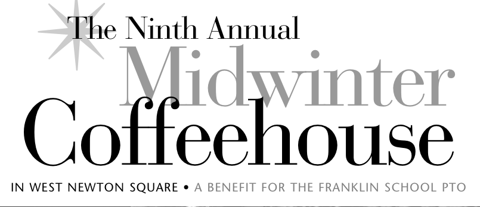
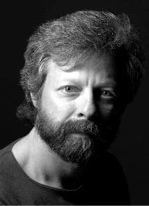
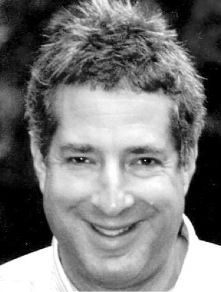
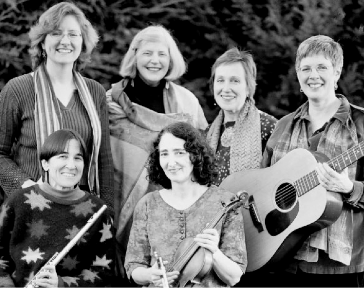

|
|  |

Newton resident and former Franklin parent Rob Siegel
( robsiegel.com) is well known in Boston
folk music circles as an innovative songwriter who produces memorable,
intelligent, well-crafted songs rooted in his suburban existence. Whether
probing the mysteries of religion, the awkwardness of running into an old flame
who didn't remember him, or fantasizing about running into his 21-year-old self
and drinking him under the table, Rob's songs provide both funny and serious
vectors to connect with an audience. Sing Out magazine says "Siegel's talents
run far wider than great writing; he is uniquely entertaining and thoughtful."
Rob has opened for Bill Staines, Vance Gilbert, Jack Hardy, and others. His
recent CD "Voices from the Right Brain: Rob Siegel Live at Club Passim" reached
#52 on the Folk DJ charts.
|

Former Newton resident Mark Stepakoff
( markstepakoff.com) enjoys a growing reputation as one of
the area's sharpest songwriters. Mark won first place in both the Great American
Song Contest and the American Songwriter Magazine's lyric contest, and was a
finalist in the USA Songwriting and Plowshares Songwriting contests. Mark is
best known for his laugh-out-loud funny material which has received airplay
on Dr. Demento's nationally syndicated radio program. Mark's wry sense of
humor takes on subjects as diverse as barbecue sauce, General Gao's chicken,
and actress Amanda Peet. But his serious material is also riveting; his moving
ballad about Boston's 1972 Hotel Vendome fire led to an invitation for him to
perform the song at a memorial service for the firefighters who perished.
|

Newton's Cindy Mapes is a member of "Constellations," a group of women who
perform original compositions and traditional and contemporary folk music
from around the world. Performing both a cappella and accompanied by
guitar, flute, violin, and percussion,"Constellations" includes
Jackie Damsky, Brett Frechette, Sue Kranz, Liz Lewis, and Jan Maier.
Dedicated to the promotion of peace and social justice, they are
known for their delightful harmonies and for involving their
audiences in music-making.
|
| FEATURING ROB SEIGEL | MARK STEPAKOFF | CINDY MAPES AND "CONSTELLATIONS" |
Other performers include Franklin parents Carroll Eastman, Pamela McA'Nulty and Don Levey,
Jenifer O'Brien,
Michael Rizzo, and Franklin School teacher Sara Seals |
SATURDAY,
FEBRUARY 7
7-10:30 P.M.
Doors open at 6:30 p.m.
First Unitarian Society
Parish Hall,
1326 Washington St.,
West Newton, MA
|
About the Event
Presented as a benefit for The Parent Teacher Organization (PTO) of
the Franklin Public Elementary School (franklinpto.org) West Newton, this event is one of
Newton's only regular coffeehouses, and features singer/songwriters active in
the Boston folk music community who have donated their time to benefit the PTO.
The tradition of excellence continues in this, the ninth year of this unique
fundraising event, with funny singer/songwriters Rob Siegel and Mark Stepakoff.
|
|
Videos from February 7th, 2009
|
|